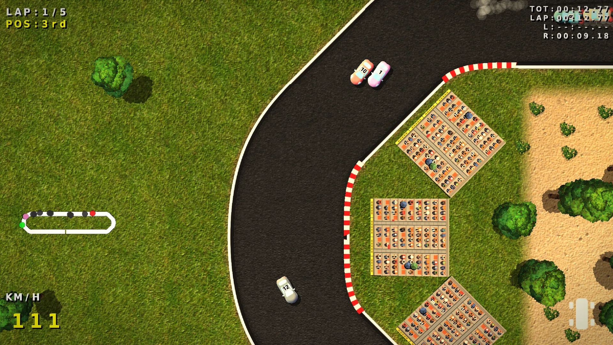
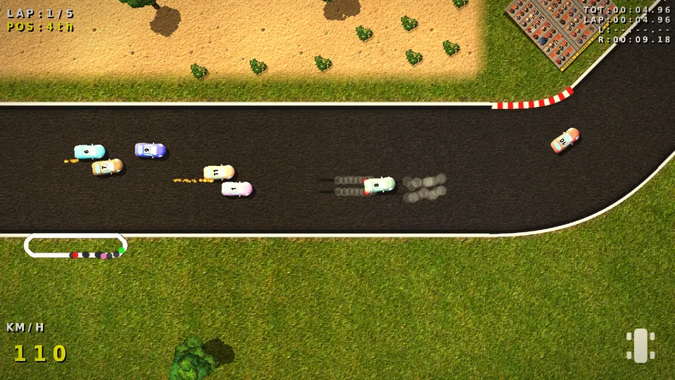
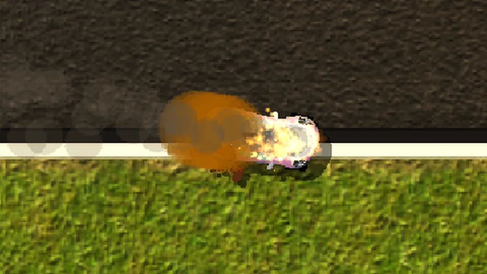
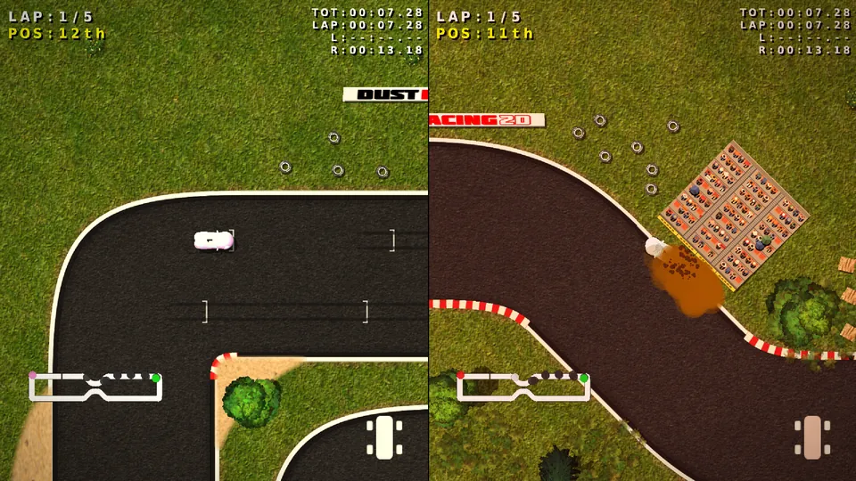
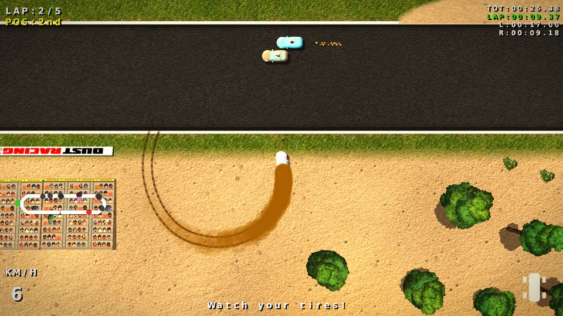
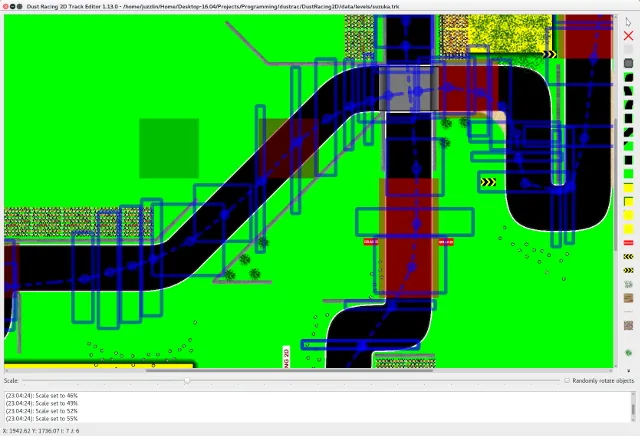

Free & open source · GPLv3 · Linux & Windows
Top-down racing with dust, dents and drama.
Dust Racing 2D is a tile-based racing game in the spirit of the classics. Race eleven computer drivers or a friend on split screen, trade paint in the corners, and build your own tracks with the level editor.

12cars on the grid
16race tracks
2players on split screen
100%free, forever
Everything a race needs
Easy to pick up, hard to win.

Racing
- Race against eleven computer drivers on three difficulty levels
- Finish in the top six to unlock the next track
- Star ratings for your best positions, lap and race records
- Results at the finish with the times and gaps of every car
- Tires wear out as the race goes on, so stop at the pit to change them
- Race, Time Trial and Duel modes

Crashes & damage
- The bodies of the cars dent and bend where they are hit
- Windshields crack and shatter, lights break and parts fly off
- Badly damaged cars lose power, smoke and catch fire
- Physics with proper contact points, spin and friction

Two players
- Race a friend on a vertically or horizontally split screen
- Against the computer drivers, or in a one-on-one Duel
- Name the players and configure their keys

Tracks that feel alive
- Packed grandstands, trees swaying in the wind and kerbs in the corners
- Skid marks on the asphalt and dust and mud off the track
- Grass, sand and weathered asphalt that change across the track

Level editor
- Build your own tracks from tiles and objects
- Set the route that the computer drivers follow
- Place your tracks in
~/DustRacingTracksand race them in the game
And more
- Runs on Linux and Windows, windowed or full screen
- Translated into Czech, Dutch, English, Finnish, French, German, Italian and Turkish
- Engine, collision and crowd sounds
- Written in C++ with Qt 6 and OpenGL, with its own physics engine, MiniCore
- Will always be 100% free
Screenshots
Download
Your distribution
Many Linux distributions package Dust Racing 2D in their own repositories.
sudo apt install dustracing2d
Debian package
The latest release for the supported Ubuntu LTS releases. Uses the Qt 6 of the distribution.
sudo apt install ./dustracing2d-*.deb
Windows
An installer with the game and the level editor.
dustracing2d-*-windows-*_setup.exe
Or build it from the source: C++, Qt 6 and OpenGL, licensed under GPLv3. The graphics are licensed under CC BY-SA 3.0.